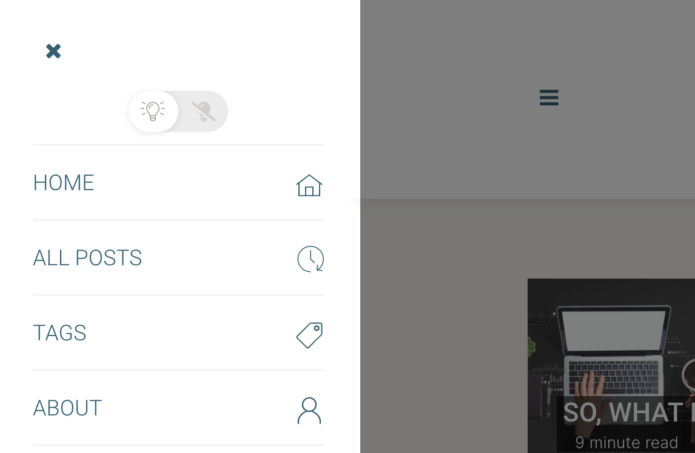

In the midst of a global pandemic caused by the SARS-COV2 coronavirus; I decided to start blogging. I wanted to blog since a long time, I have always enjoyed writing, but many unknowns and having “no time” for it prevented me from taking it up. Things like: “I don’t really know who my target audience is”, “what would my topic or topics be?”, “I don’t think I am a world-class expert in anything”, and many more kept stopping me from setting up my own blog. Now seemed like a good time as any so with those and tons of other... read more
Starting the adventure
In the midst of a global pandemic caused by the SARS-COV2 coronavirus; I decided to start blogging. I wanted to blog since a long time, I have always enjoyed writing, but many unknowns and having “no time” for it prevented me from taking it up. Things like: “I don’t really know who my target audience is”, “what would my topic or topics be?”, “I don’t think I am a world-class expert in anything”, and many more kept stopping me from setting up my own blog. Now seemed like a good time as any so with those and tons of other questions in my mind I decided it was time to start.
Funnily, this is not my first post. The birth of the blog came very natural as a way to “document” my newly established pursuit for getting myself into Machine Learning. This new adventure of mine comprises several things, and if I want to succeed I need to be serious about them all:
- I want to start coding again! I used to code a long time ago, starting when I was 8 years old in a Tandy Color Computer hooked up to my parent’s TV.
- Machine Learning is a vast, wide subject, I want to learn the generals, but also to select a few areas to focus on.
- Setting up a blog to document my journey and share it:
- Establish a learning and blogging routine. If I don’t do this, I am sure this endeavour will die off soon.
As for the focus areas I will start with:
- Neural Networks fundamentals: history, basic architecture and math behind them
- Deep Neural Networks
- Reinforcement Learning
- Current state of the art: what is at the cutting edge now in terms of Deep Neural Networks and Reinforcement Learning?
I selected the above areas to focus on based on my personal interests, I have been fascinated by the developments in reinforcement learning for a long time, in particular Deep Mind’s awesome Go, Chess and Starcraft playing agents. Therefore, I started reading a lot about it and even started a personal project for coding a tic-tac-toe learning agent.
With my limited knowledge I have drafted the following learning path:
- Youtube: Three Blue One Brown’s videos on Neural Networks, Calculus and Linear Algebra. I cannot recommend them enough, they are of sufficient depth and use animation superbly to facilitate the understanding of the subjects.
- Coursera: Andrew Ng’s Machine Learning course
- Book: Deep Learning with Python by Francois Chollet
- Book: Reinforcement Learning: An Introduction, by Richard S. Sutton and Andrew G. Barto
As for practical work I decided to start by coding my first models from scratch (without using libraries such as Tensorflow), to be able to deeply understand the math and logic behind the models, so far it has proven to be priceless.
For my next project I think I will start to do the basic hand-written digits recognition, which is the Machine Learning Hello World, for this I think I will start to use Tensorflow already.
I will continue to write about my learning road, what I find interesting and relevant, and to document all my practical exercises, as well as news and the state of the art in the world of AI.
So far, all I have learned has been so engaging that I am seriously thinking of a career change. I have 17 years of international experience in multinational corporations across various functions, such as Information Services, Sales, Customer Care and New Products Introduction, and sincerely, I am finding more joy in artificial intelligence than anything else I have worked on before. Let’s see where the winds take us.
Thanks for reading!
P.S. For the geeks like me, here is a snippet on the technical side of the blog.
Static Website Generator
I researched a lot on this, when I started I didn’t even know I needed a static website generator. I was just sure of one thing, I wanted my blog site to look modern, be easy to update and not to have anything extra or additional content or functionality I did not need.
There is a myriad of website generators nowadays, after a lengthy search the ones I ended up considering are:
I started with the web interfaced generators with included hosting in their offerings:
wordpress is the old standard, it is the one CMS I knew from before, and I thought I needed a fully fledged CMS, so I blindly ran towards it. Turns out, it has grown a lot since I remembered, it is now a fully fledged platform for complex websites and ecommerce development, even so I decided to give it a try, I picked a template and created a site. Even with the most simplistic and basic template I could find, there is a lot going on in the site. Setting it up was not as difficult or cumbersome as others claim, it took me about one hour to have it up and running, it looks good, but a bit crowded for my personal taste, and I found out it serves ads in your site for the readers, that is a big no for me.
I have tried wix and squarespace before, they are fantastic for quick and easy website generation, but their free offering has ads, so again, a big no for me.
I discovered ghost as the platform used by one of the bloggers I follow (Sebastian Ruder), turns out is a fantastic evolution over wordpress. It runs on the latest technologies, its interface is quite modern, and it is focused on one thing only: publishing. They have a paid hosting service, but the software is open sourced, therefore free to use in any hosting.
I also tested webflow and even created a mockup there, the learning curve was quite smooth, and its CMS seems quite robust, but a bit too much for the functionalities I required.
Next were the generators that don’t have a web interface, but can be easily set up:
The first I tried was netlify, I also set up a test site in it. Netlify provides free hosting, and to keep your source files it uses GitHub (a repository keeps the source files where it publishes from). It has its own CMS, Netlify CMS, and you have a choice of site generators: Hugo, Gatsby, MiddleMan, Preact CLI, Next.js, Elevently and Nuxt.js, and once you choose there are some templates for each. I did not find the variety of templates enticing enough, and the set up process was much more cumbersome than with wordpress (at least for my knowledge level). I choose Hugo for my test site.
I also tested gatsby with it’s own Gatsby Cloud hosting service, here is my test site. They also use GitHub as a base to host the source files to build the website, so you create a repository, and it is connected to it. I found the free template offerings quite limited for what I was looking for.
Finally it came the turn for jekyll, although an older, and slower generator (compared to Hugo and Gatsby), it was created by one of the founders of GitHub, so it’s integration with GitHub Pages is quite natural and painless, so much so, that to use them together you don’t even have to install Jekyll in your machine! You have two choices:
- keep it all online, by having one repository in Github keep all the source files, modify or add them online, and having Jekyll build and publish your site to the special
gh-pagesrepository everytime you change or add a new file to the source repository. - Have a synchronized local copy of the source files for the website, this way you can edit your blog and customize it in your choice of IDE (Integrated Development Environment). Then, when you update any file on your computer, you just “push” the changes to GitHub, and GitHub Pages automatically uses Jekyll to build and publish your site.
I chose the second option, specially because I can manipulate files, like images, in my laptop, and everytime I sync my local repository with GitHub, they are updated and published automatically. Quite convenient.
After testing with several templates to get the feel for it, I decided to keep Jekyll for my blog for several reasons: the convenience of not having to install anything extra on my computer to build my blog, the integration with GitHub Pages, the ease of use, the future proofing via integration with modern technologies such as react or vue and the vast online community that has produced tons of templates and useful information for issue resolution, customization and added functionality.
I picked up a template, just forked the repository and started modifying the files to customize it, it was fast and easy, I even took it upon myself to add some functionality to the template (it served as a coding little project) like:
- SEO meta tags
- Dark mode (configurable in _config.yml file)
- automatic sitemap.xml
- automatic archive page with infinite scrolling capability
- new page of posts filtered by a single tag (without needing autopages from paginator V2), also with infinite scrolling
- click to tweet functionality (just add a
<tweet> </tweet>tag in your markdown. - custom and responsive 404 page
- responsive and automatic Table of Contents (optional per post)
- read time per post automatically calculated
- responsive post tags and social share icons (sticky or inline)
- included linkedin, reddit and bandcamp icons
- copy link to clipboard sharing option (and icon)
- view on github link button (optional per post)
- MathJax support (optional per post)
- tag cloud in the home page
- ‘back to top’ button
- comments ‘courtain’ to mask the disqus interface until the user clicks on it (configurable in _config.yml)
- CSS variables to make it easy to customize all colors and fonts
- added several pygments themes for code syntax highlight configurable from the _config.yml file. See the highlighter directory for reference on the options.
- responsive footer menu and footer logo (if setup in the config file)
- smoother menu animations

As a summary, Hugo and Gatsby might be much faster than Jekyll to build the sites, but their complexity I think makes them useful for a big site with plenty of posts. For a small site like mine, Jekyll provides sufficient functionality and power without the hassle.
You can use the modified template yourself by forking my repository. Let me know in the comments or feel free to contact me if you are interested in a detailed walkthrough on how to set it all up.
Hosting
Since I decided on Jekyll to generate my site, the choice for hosting was quite obvious, Github Pages is very nicely integrated with it, it is free, and it has no ads! Plus the domain name isn’t too terrible (the-mvm.github.io).
Interplanetary File System
To contribute to and test IPFS I also set up a mirror in IPFS by using fleek.co. I must confess that it was more troublesome than I imagined, it was definetively not plug and play because of the paths used to fetch resources. The nature of IPFS makes short absolute paths for website resources (like images, css and javascript files) inoperative; the easiest fix for this is to use relative paths, however the same relative path that works for the root directory (i.e. /index.html) does not work for links inside directories (i.e. /tags/), and since the site is static, while generating it, one must make the distinction between the different directory levels for the page to be rendered correctly.
At first I tried a simple (but brute force solution):
# determine the level of the current file
{% assign lvl = page.url | append:'X' | split:'/' | size %}
# create the relative base (i.e. "../")
{% capture relativebase %}{% for i in (3..lvl) %}../{% endfor %}{% endcapture %}
{% if relativebase == '' %}
{% assign relativebase = './' %}
{% endif %}
...
# Eliminate unecesary double backslashes
{% capture post_url %}{{ relativebase }}{{ post.url }}{% endcapture %}
{% assign post_url = post_url | replace: "//", "/" %}
This jekyll/liquid code was executed in every page (or include) that needed to reference a resource hosted in the same server.
But this fix did not work for the search function, because it relies on a search.json file (also generated programmatically to be served as a static file), therefore when generating this file one either use the relative path for the root directory or for a nested directory, thus the search results will only link correctly the corresponding pages if the page where the user searched for something is in the corresponding scope.
So the final solution was to make the whole site flat, meaning to live in a single directory. All pages and posts will live under the root directory, and by doing so, I can control how to address the relative paths for resources.